Are you drowning in information, but starving for knowledge?
Where do you
keep your private remarks like ideas, personal plans, exam preparation notes, gift tips,
how-tos, dreams, business visions, finance strategies, meeting minutes and auto
coaching notes? Loads of documents, sketches and remarks spread
around the file system, cloud, web and Post-it notes? Are you afraid of your knowledge privacy? Are you able to
find particular remarks once you create them? Do you know how are the remarks
mutually related when you browse, read or write them? No?
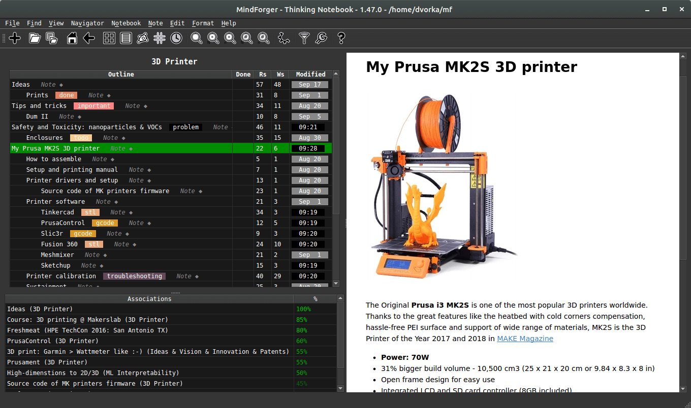
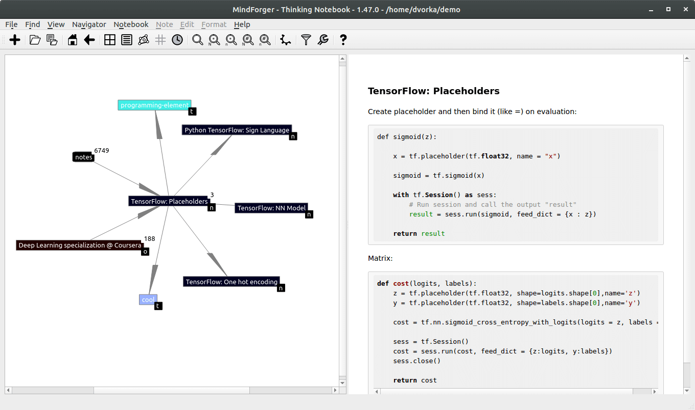
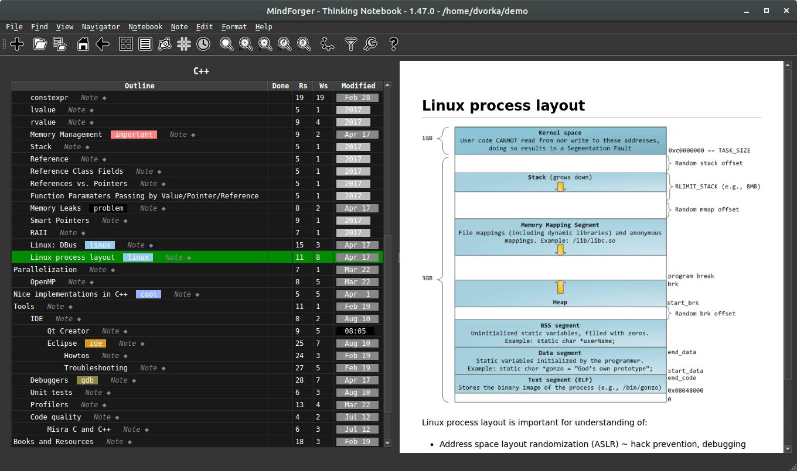
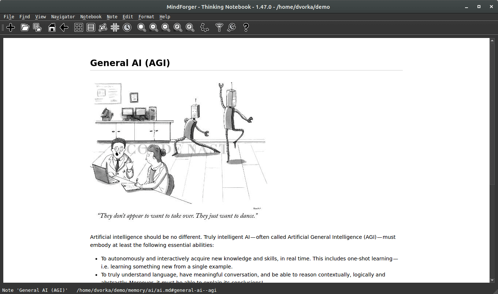
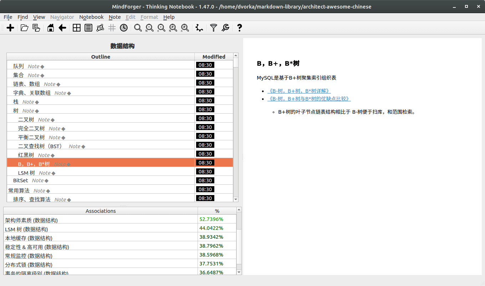
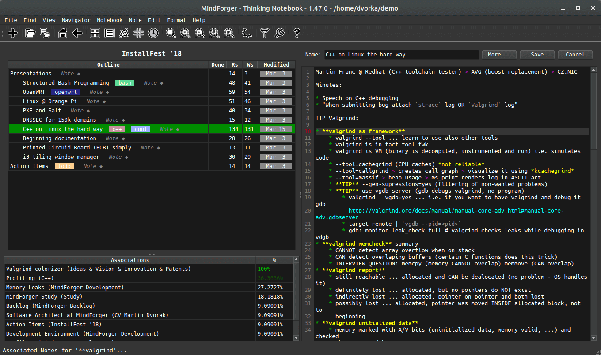
Think as you read
Knowledge graph
Markdown with preview
Hoisting
I18n
Think as you write
MindForger aims to mimic human mind - learning, recalling, recognition,
associations, forgetting - in order
to achieve synergy with your mind to make your searching,
reading and writing more productive.
MindForger ensures that you own your personal data.
It respects privacy and enables security of your knowledge.
MindForger seeks knowledge hidden in your remarks
to enable its mining.
MindForger starts where editors and search
engines end. It thinks as you search, browse, read and write. Once you find
a remark, MindForger brings its associations. As you browse notes and read
them it looks up related relevant knowledge in your notebooks.
If you edit a remark, MindForger brings associations as you write.
It reminds you about existing content related to the text being written.
MindForger is a desktop application for Linux.
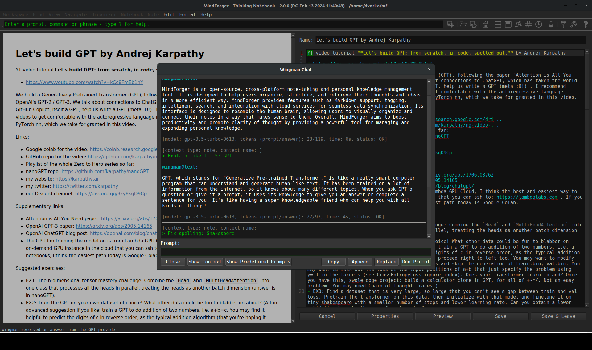
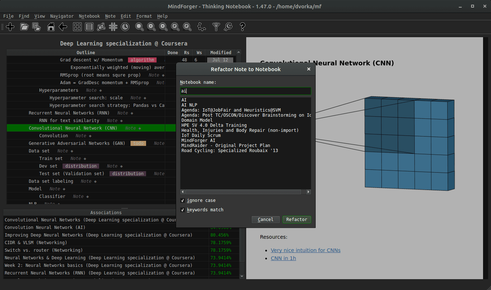
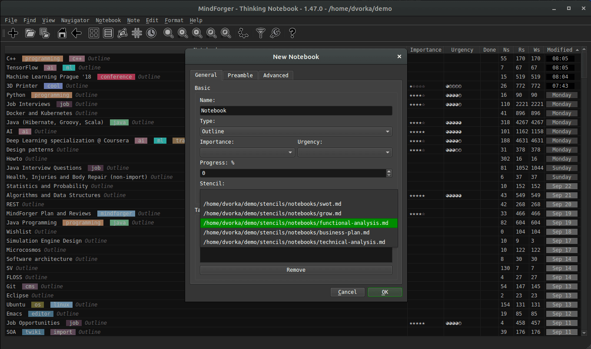
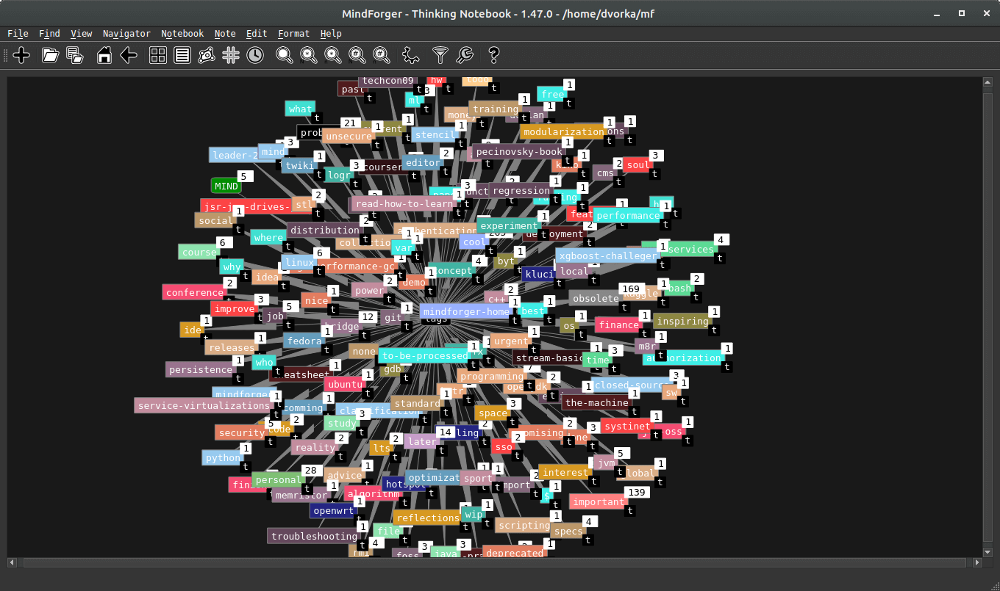
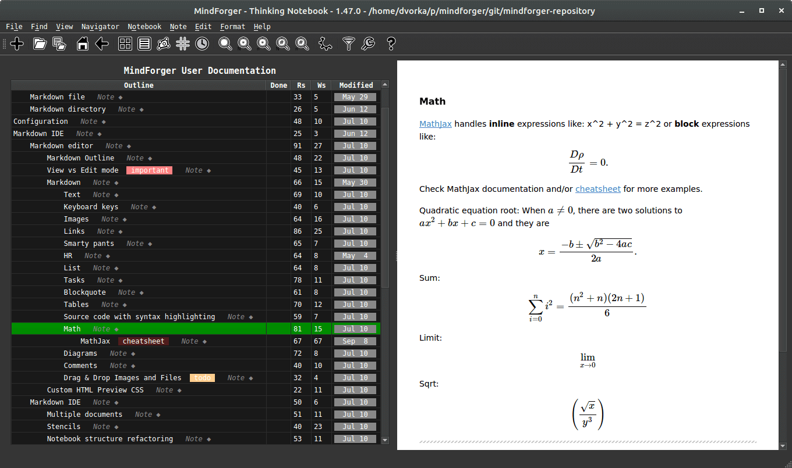
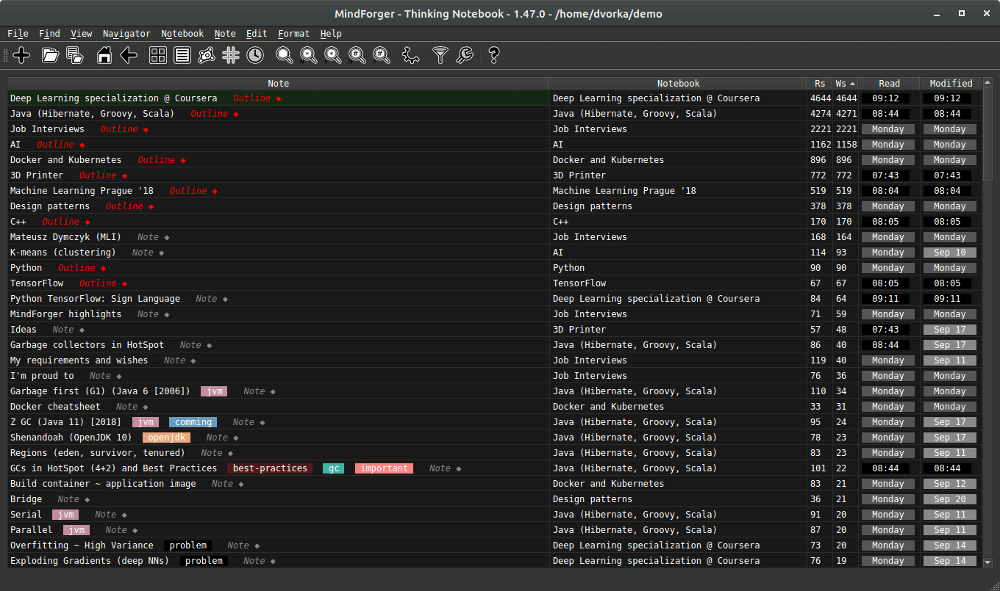
LLM
Refactoring
Stencils
Tag navigator
Math
Recent notes
MindForger thinks as you read and write. While you work on a Note, MindForger
associates it with related Notes from your whole workspace - including those
you forgot you ever wrote. Associations are computed locally, with
no cloud and no LLM required.
Links that write themselves. Names of Notebooks and Notes mentioned in your text
are automatically turned into links in the preview - your hand-written
links are rendered in blue, generated ones in green - so that your knowledge
gets interconnected without any extra effort - no need to manually creat links, Wiki camel case words or other linking conventions.
Assistant that doesn't send your notes anywhere. Wingman runs open-weight
Large Language Models - like gpt-oss, Llama, GLM or Qwen -
privately on your machine
via
ollama to
summarize,
explain,
translate,
rewrite, fix
grammar, generate
tags or find
tasks in the Notes you read and write.
Keep your hands on the keyboard. MindForger is designed to be used
without a mouse - almost every action has a keyboard shortcut and every
menu item has an accelerator. Recall a Notebook or Note by name in a few
keystrokes, easily restructure the outline, complete links to
Notes as you type or run commands. Your thoughts flow
straight from your mind to your notes.
Start from structure, not from a blank page. Create Notebooks from stencils -
meeting minutes, software analysis and design documents, S.M.A.R.T.E.R. goals or
the GROW model - and capture thoughts as one of 16 typed Notes
like idea, question, lesson, task or SWOT. Add your own stencils and Note types
to fit how you think.
Refactor your thinking like source code. MindForger brings IDE style features to your notes -
clone, promote, demote, move and extract Notes
within one Markdown file or across many of them, using keyboard shortcuts
for extreme efficiency and speed.
Walk through your knowledge. The knowledge graph navigator renders Notebooks,
Notes, tags and their relationships as an interactive force-directed graph
which you can explore node by node - like implicit mind map.
Know what to do next. Kanban boards and Eisenhower matrix
organizers sort your Notebooks and Notes by their tags - TODO, WIP, DONE or urgent
and important - so you don't need another task management app.
Notebook shelves then let you group Notebooks to as many named
shelves as you need. From Notes to Notebooks, from Notebooks to priorities and actions.
Your files, your tools. Everything is
plain Markdown on your disk.
Open a MindForger workspace,
any existing
Markdown directory or just
a
single Markdown
file. Synchronize, share, back up and encrypt your
knowledge with the tools you trust - own Git server, private
GitHub or
Bitbucket repository,
or cloud drive of your choice.
Markdown editor with live preview, syntax highlighting, offline KaTeX math and Mermaid diagrams,
spell check, emojis, Emacs keybindings,
paragraph rewrap, hoist mode and the option to edit a Note in your favorite external editor.
Index directories with PDF documents as Notebooks, keep them in sync
and detect orphaned documents. Study, read and annotate your PDFs conveniently
connected with your remarks.
Export Notebooks to HTML or Markdown, or your whole workspace to CSV
with one-hot encoded tags - ready for your machine learning and analytics tools.
Written in C++ and Qt, works completely offline and runs on
Linux, macOS and Windows.
Optional MindForger's
Wingman can use
either local (privacy -
Ollama)
or remote (SOTA -
OpenRouter
or
OpenAI)
Large Language Model (LLM)
to provide
semantic and
syntactic assistance when you
read and
write your
notes - with Wingman you can:
... and much more.
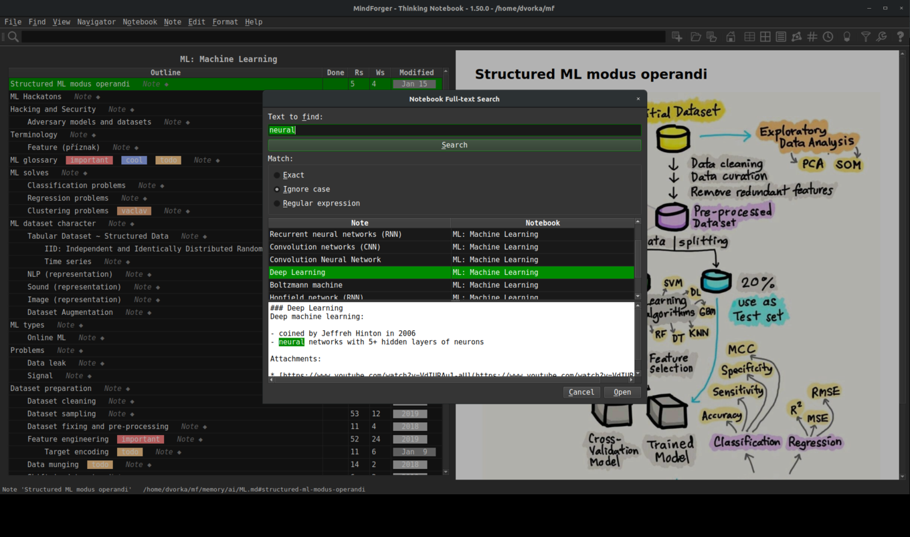
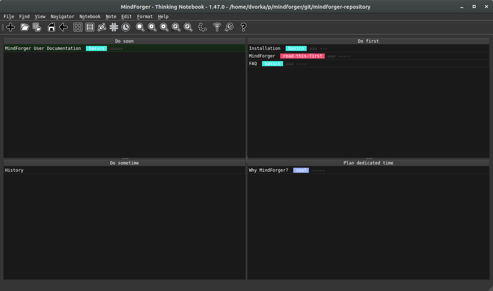
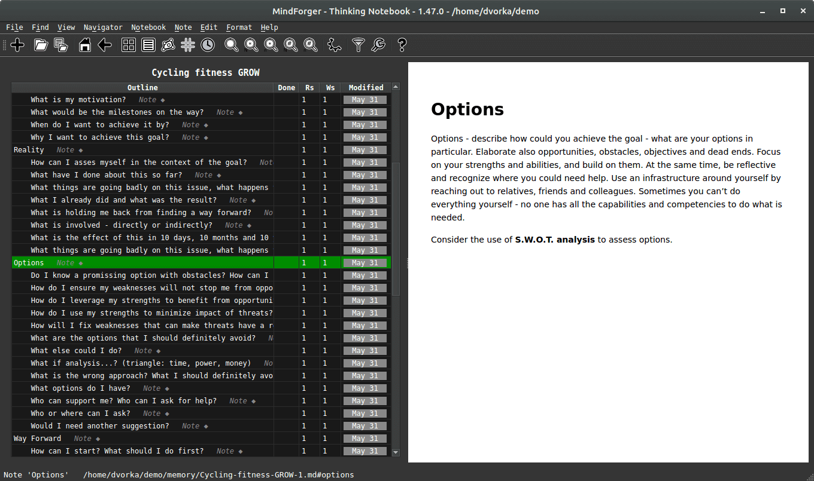
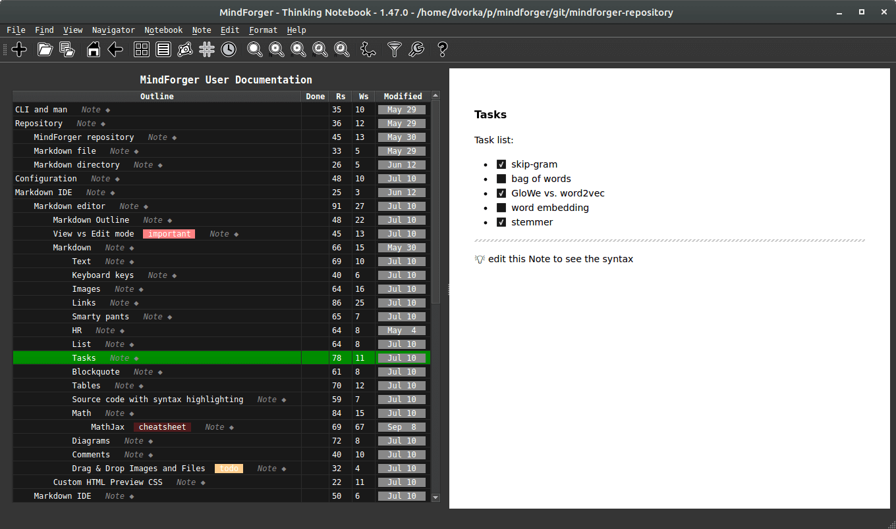
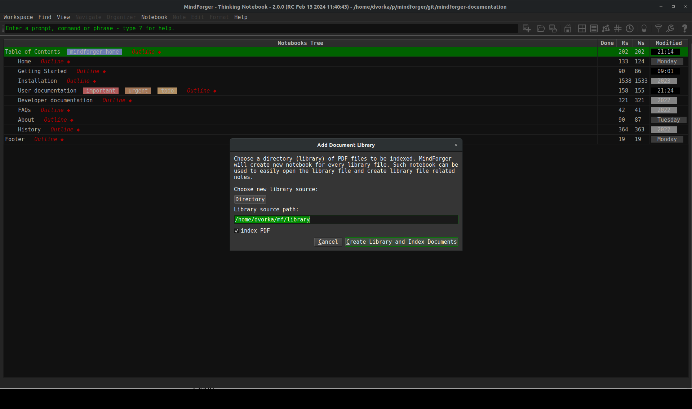
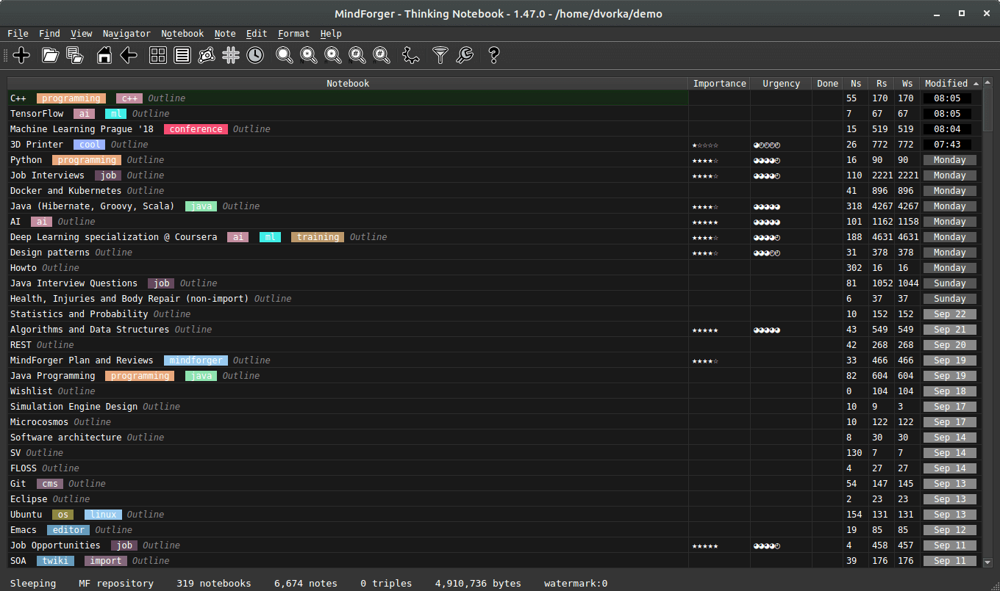
Full-text search
Eisenhower matrix
G.R.O.W. model
Task lists
PDF library
Multiple documents
Free software is a matter of
liberty, not price - you are free to run, study,
change and share your copy of MindForger. It is licensed under the
GNU GPL
and it
costs nothing to download and use. No account, no subscription.
MindForger is a native C++/Qt application. Workspaces with 1000s of Notes
and 100s of Markdown files are parsed and indexed in moments, and then
searched, viewed and edited without delay.
Your Notes live locally on your machine. MindForger has no account and no
telemetry and it uploads nothing - neither your data nor an anonymized digest
of it. With a local ollama model, even AI assistance stays offline.
Current MindForger implementation is just an initial imperfect sketch of much broader
vision. It's purpose is to demonstrate viability of thinking notebook idea and to show
possible research directions.
- Bugs and suggestions ... submit bugs, issues, ideas and enhancements.
- Translations ... translate MindForger to your language.
- Platform support ... port MindForger to your favorite OS or distribution.
- Code ... submit pull request or patch with implementation of a feature you missed.
- Research ... consider making your AI/ML, NLP, data mining, ... research on top of (your) documents indexed to MindForger ontology.
- Integration ... how-to or code enabling integration with your (favorite) project.
- Enhancements ... submit performance, efficiency and/or productivity enhancements.
- Documentation ... write a document, blog post or tweet, create YouTube video, ...